Báo cáo EDA MemoryArena
Báo cáo tiếng Việt từ kết quả notebook Kaggle EDA cho benchmark MemoryArena.
Dữ liệu được tải trực tiếp từ Hugging Face dataset ZexueHe/memoryarena.
1. Tóm tắt điều hành
MemoryArena trong lần chạy này gồm 5 subset với 701 task và 4.850 subtask. Các kiểm tra schema cơ bản đều tốt:
không có task nào bị lệch số lượng questions và answers. Điều này cho phép dùng trực tiếp
các bảng chuẩn hóa task-level và subtask-level để phân tích memory pressure.
Kết quả nổi bật nhất là mỗi subset tạo ra một kiểu áp lực bộ nhớ khác nhau. group_travel_planner
mạnh nhất về quan hệ giữa người và constraint theo lịch trình; bundled_shopping mạnh về cấu trúc
key-value/attribute; formal_reasoning_math nặng nhất về độ dài context và background ký hiệu;
progressive_search thể hiện rõ bài toán tích lũy ràng buộc qua nhiều câu hỏi trung gian.
Dashboard hình ảnh nhanh
Các hình dưới đây là những chart quan trọng nhất được chọn từ notebook Kaggle. Mục tiêu là nhìn nhanh được ba chiều: quy mô dữ liệu, độ khó tương đối và kiểu memory pressure của từng subset.
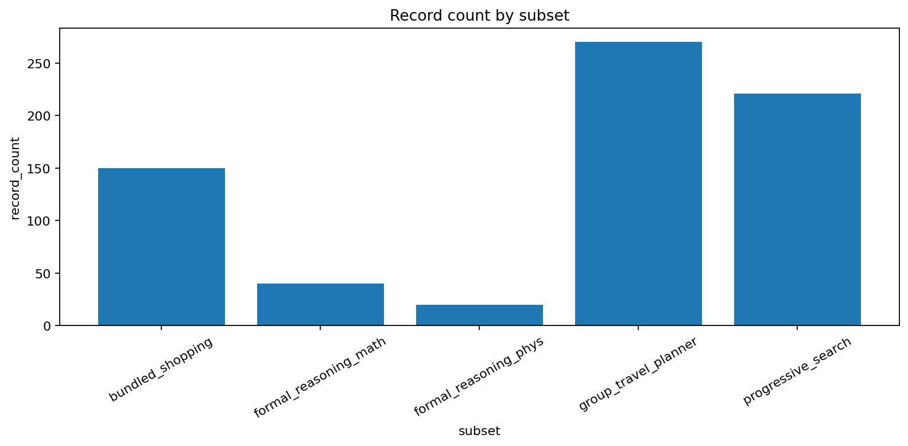
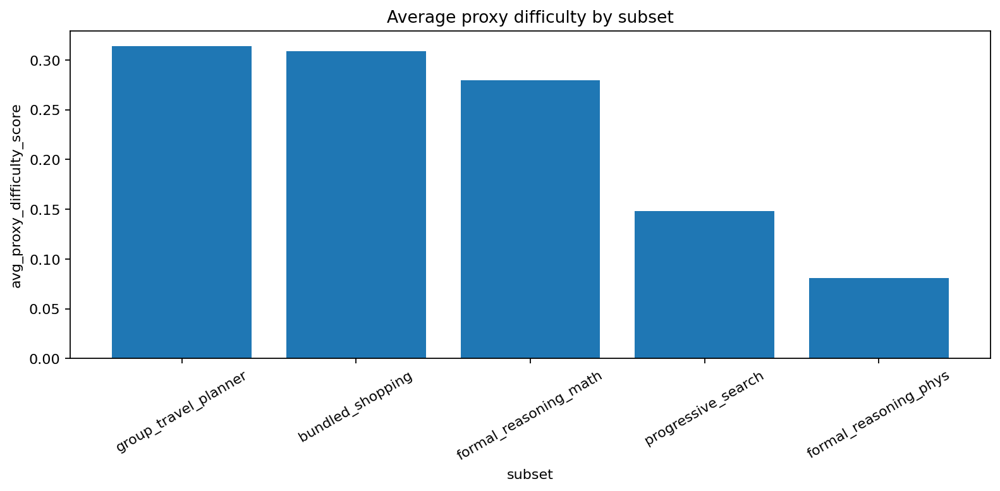
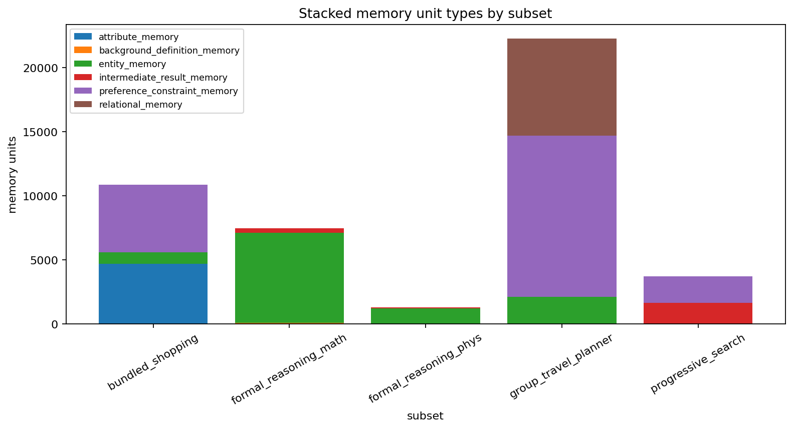
2. Phạm vi dữ liệu và chất lượng schema
| Subset | Tasks | Subtasks | Avg questions/task | Median total tokens | Invalid schema |
|---|---|---|---|---|---|
bundled_shopping | 150 | 900 | 6,000 | 2.453,5 | 0 |
progressive_search | 221 | 1.641 | 7,425 | 3.741,0 | 0 |
group_travel_planner | 270 | 1.869 | 6,922 | 5.799,5 | 0 |
formal_reasoning_math | 40 | 354 | 8,850 | 7.214,5 | 0 |
formal_reasoning_phys | 20 | 86 | 4,300 | 1.238,0 | 0 |
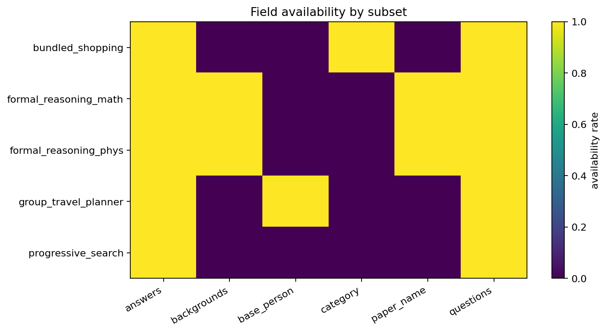
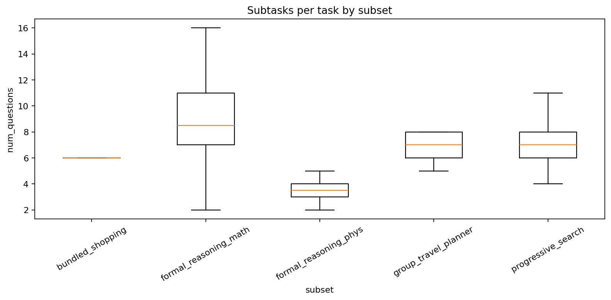
questions và answers hiện diện 100% ở cả 5 subset.
backgrounds chỉ xuất hiện ở formal reasoning, base_person chỉ xuất hiện ở travel planner,
và category chỉ xuất hiện ở shopping. Đây là missingness theo thiết kế, không phải lỗi dữ liệu.
3. Proxy difficulty score
Difficulty score được tính từ các feature đã chuẩn hóa: số câu hỏi, tổng token của question/answer/background, độ phức tạp cấu trúc answer, số constraint keyword, số entity/attribute và số dependency reference. Đây là chỉ báo EDA để so sánh tương đối, không phải metric chính thức của MemoryArena.
| Rank | Subset | Avg difficulty | Median difficulty | Nguyên nhân chính |
|---|---|---|---|---|
| 1 | group_travel_planner | 0,3137 | 0,3029 | Nhiều quan hệ liên người, nhiều constraint lịch trình và answer dài. |
| 2 | bundled_shopping | 0,3086 | 0,3076 | Constraint keyword rất dày, nhiều attribute và ASIN cần lưu chính xác. |
| 3 | formal_reasoning_math | 0,2795 | 0,2732 | Background dài, nhiều ký hiệu, nhiều subtask/task. |
| 4 | progressive_search | 0,1484 | 0,1341 | Áp lực nằm ở tích lũy constraint, ít dependency/entity hơn travel. |
| 5 | formal_reasoning_phys | 0,0807 | 0,0666 | Ít task hơn, ít subtask hơn và context nhẹ hơn formal math. |
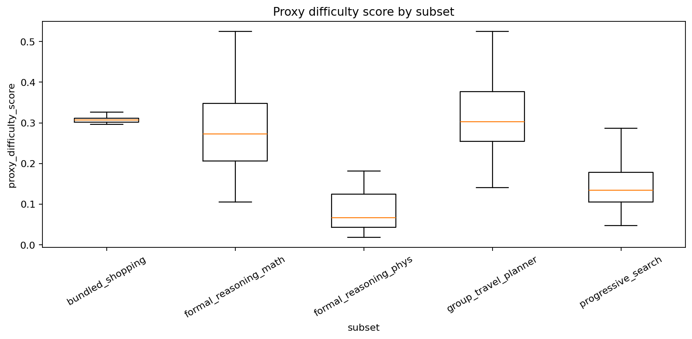
4. Phân tích token và độ dài context
| Subset | Mean total tokens/task | Max total tokens/task | Median question tokens/subtask | Median answer tokens/subtask | P90 background tokens/subtask |
|---|---|---|---|---|---|
formal_reasoning_math | 7.516,8 | 13.472 | 122,0 | 67,0 | 1.998,4 |
group_travel_planner | 5.758,1 | 10.553 | 208,0 | 617,0 | 0,0 |
progressive_search | 3.975,4 | 9.681 | 29,0 | 492,0 | 0,0 |
bundled_shopping | 2.473,2 | 2.943 | 372,0 | 41,0 | 0,0 |
formal_reasoning_phys | 1.582,2 | 3.635 | 80,5 | 48,0 | 723,0 |
formal_reasoning_math là subset nặng nhất theo token tổng và background, trong khi
group_travel_planner nặng do answer dài theo itinerary. bundled_shopping có question dài
và đều hơn, còn answer ngắn nhưng có cấu trúc cao. progressive_search có answer dài vì answer chứa
phần giải thích/search evidence, nhưng question trung gian rất ngắn.
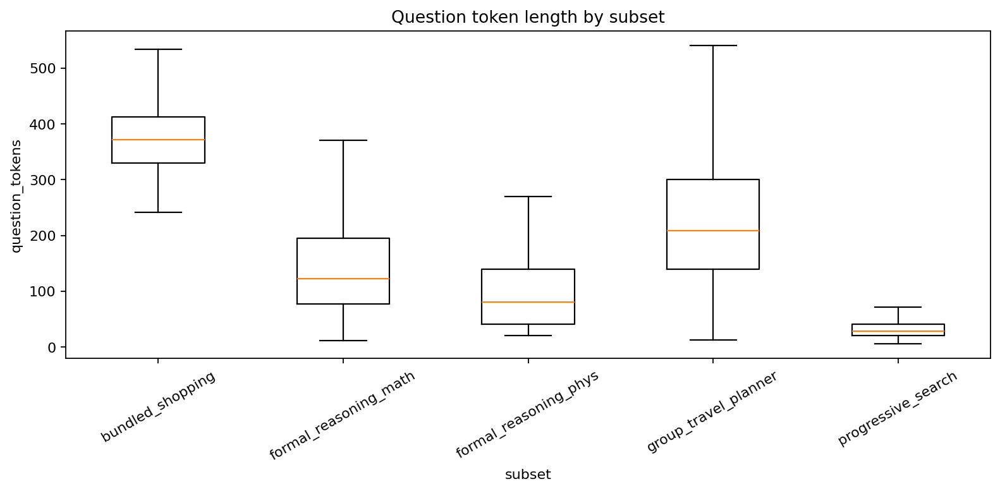
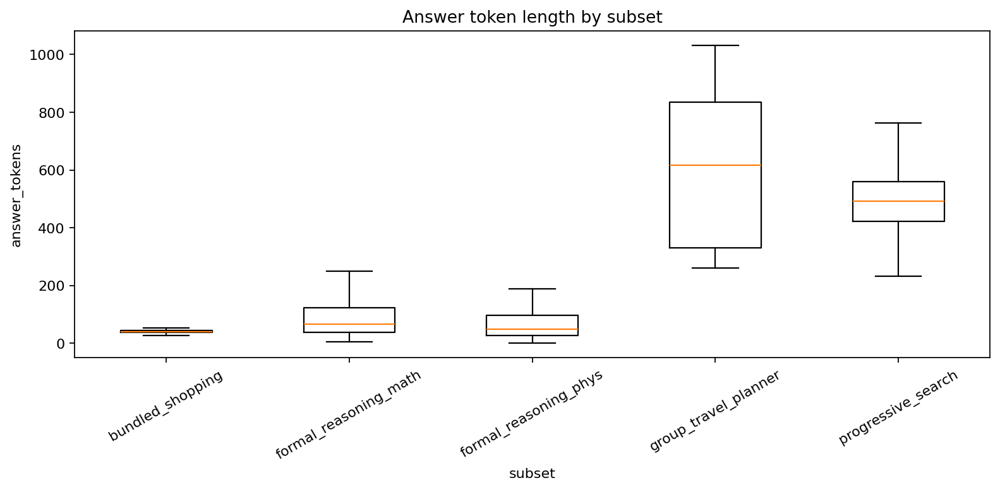
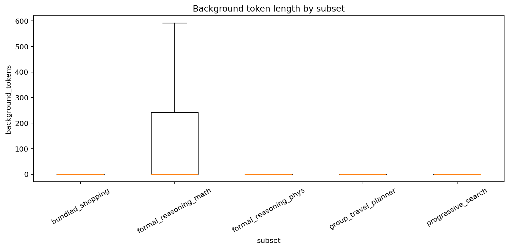
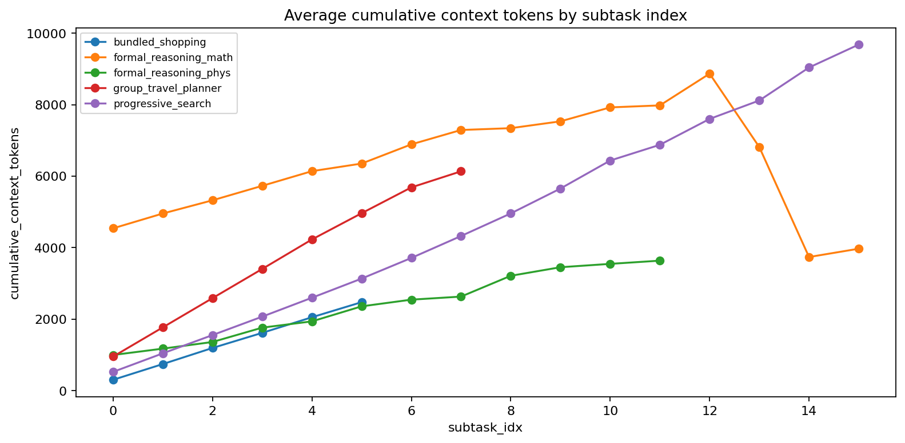
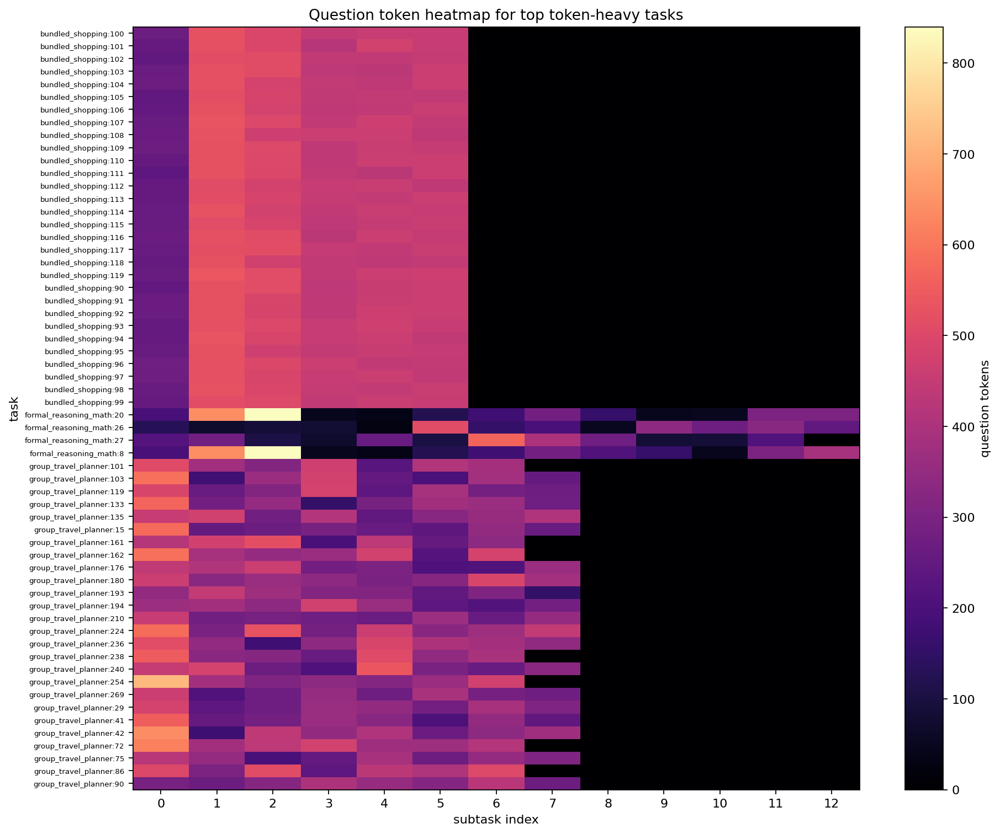
5. Subset: bundled_shopping
Thống kê chính
- 150 task, 900 subtask, đúng 6 product steps/task.
- 900 shopping answers, 694 unique ASIN.
- Trung bình 5,24 attributes/answer; median 6 attributes; max 8 attributes.
- Average difficulty: 0,3086, đứng thứ hai toàn benchmark.
Top attributes
niacinamide: 32silicone: 29gold: 28surge protector: 28vegan: 274k: 26
Shopping là dạng memory có cấu trúc rõ nhất. Agent không chỉ cần nhớ câu hỏi hiện tại, mà còn cần giữ lại lựa chọn ground-truth trước đó, thuộc tính kỹ thuật, compatibility note, budget và thứ tự mua hàng. Với kiểu task này, memory dạng document thuần túy thường kém hiệu quả hơn memory dạng bảng hoặc key-value schema.
task_id, subtask_idx, target_asin,
attributes, constraint tương thích, budget và ranking preference. Retrieval nên ưu tiên exact key,
filter theo step trước đó và attribute overlap.
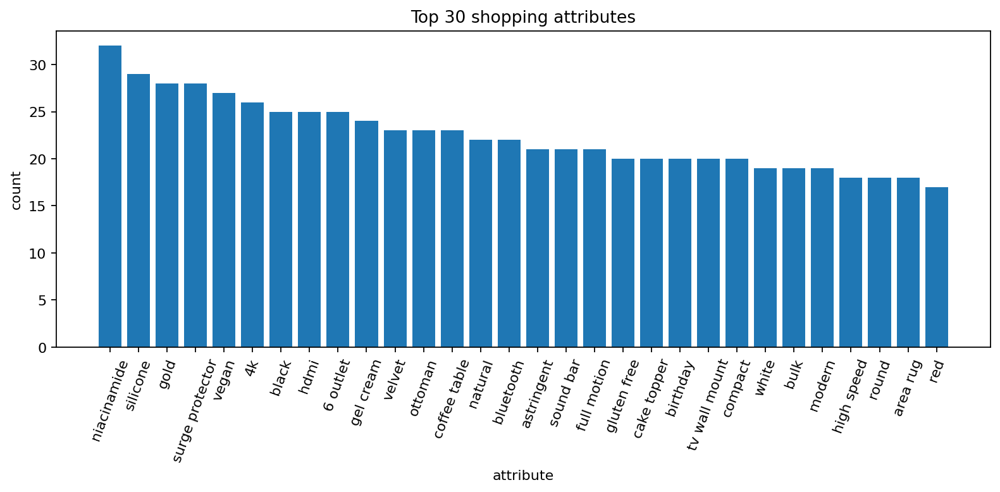
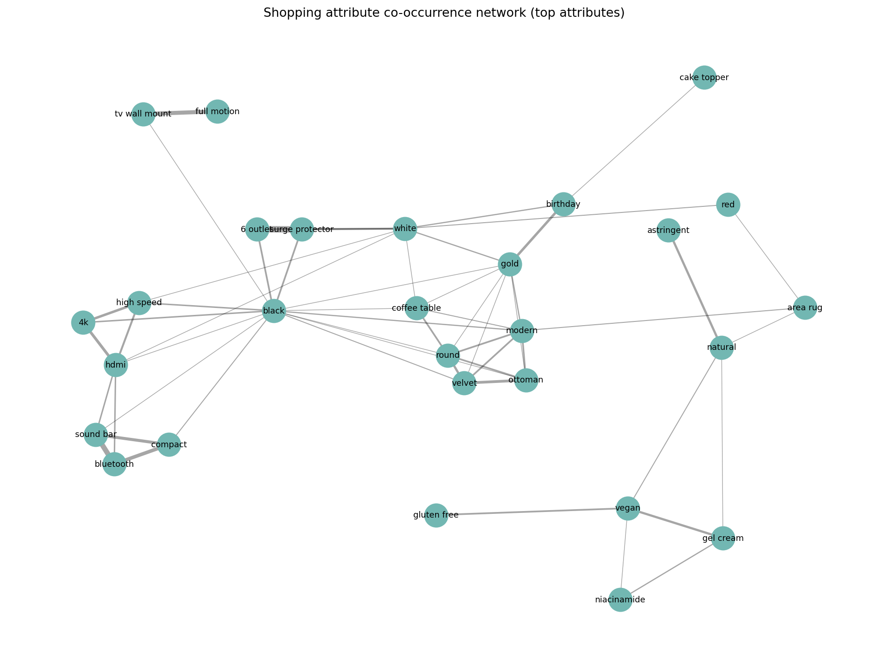
6. Subset: progressive_search
| Chỉ số | Giá trị |
|---|---|
| Tasks | 221 |
| Mean subqueries/task | 7,43 |
| Max subqueries/task | 16 |
| Mean final question tokens | 122,4 |
| Mean intermediate question tokens | 29,0 |
| Task có all intermediate answers same | 0 |
Progressive search thể hiện rõ pattern “final question expansion”: câu cuối tổng hợp nhiều ràng buộc từ các bước
trước và dài hơn khoảng 4 lần so với câu trung gian. Pattern câu cuối phổ biến gồm as of,
what is the và một số trường hợp what is the full name. Đây là bài toán cần memory theo
chuỗi constraint hơn là chỉ retrieval câu gần nhất.
unique_answer_count hiện đếm raw answer string, mà answer thường dài và chứa explanation. Cần
canonicalize entity/candidate answer để đo “unique intermediate results” chính xác hơn.
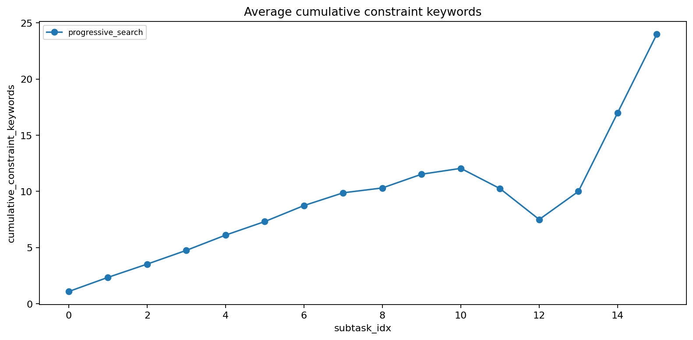
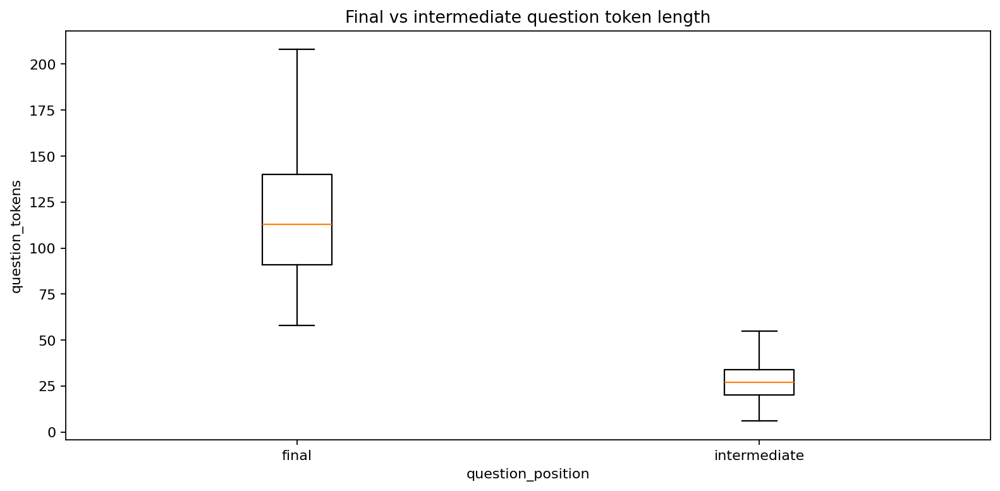
7. Subset: group_travel_planner
Đây là subset có proxy difficulty cao nhất. Mỗi task có base traveler và nhiều traveler phát sinh, với các yêu cầu phụ thuộc vào lịch trình, nhà hàng, chỗ ở và người đi cùng trước đó.
| Keyword constraint | Count | Ý nghĩa memory |
|---|---|---|
accommodation | 4.501 | Ràng buộc chỗ ở và sharing room. |
dinner | 3.946 | Slot ăn tối thay đổi theo ngày/người. |
rating | 3.812 | Preference định lượng cần giữ chính xác. |
breakfast | 3.596 | Slot ăn sáng theo ngày. |
lunch | 3.327 | Slot ăn trưa theo ngày. |
cuisine | 2.126 | Preference loại món/nhà hàng. |
Trip days phân bổ đều: 90 task cho 3 ngày, 90 task cho 5 ngày và 90 task cho 7 ngày. Điều này hữu ích cho benchmark: nó tách tương đối rõ áp lực do số traveler/constraint khỏi áp lực do số ngày.
person, day, slot,
restaurant, accommodation. Edge nên có namespace theo task_id để tránh
merge nhầm các tên người phổ biến giữa các task khác nhau.
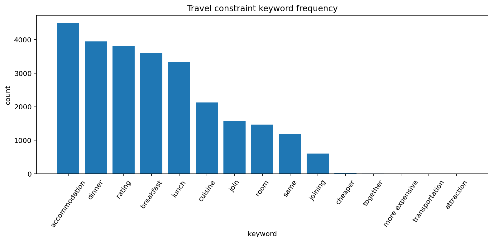
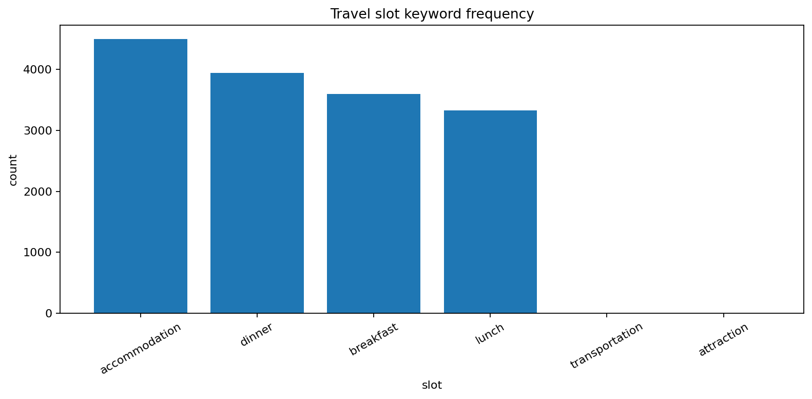
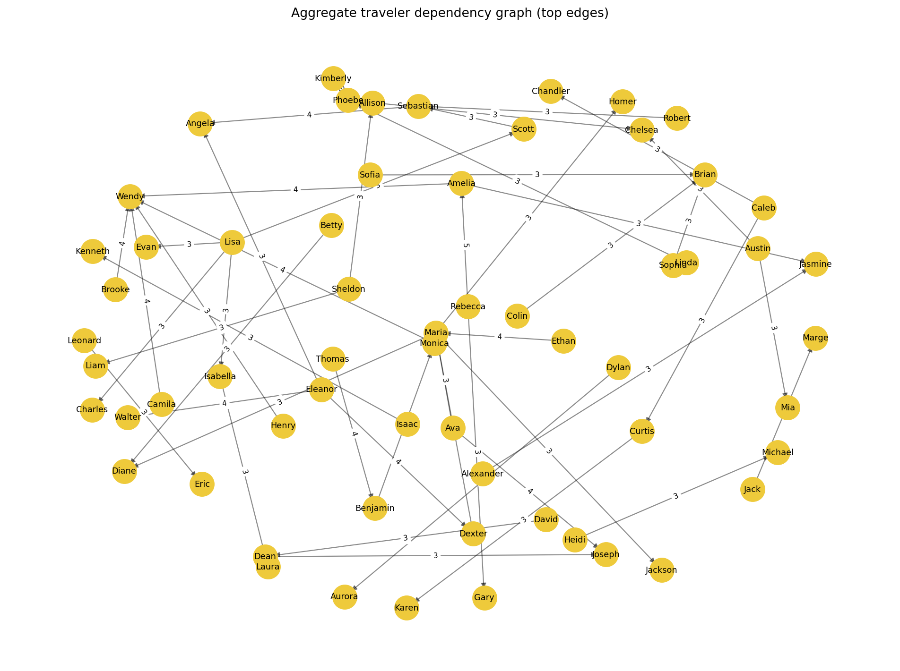
8. Subset: formal_reasoning_math và formal_reasoning_phys
| Subset | Tasks | Papers | Avg subtasks | Avg total tokens | Avg background tokens | Avg difficulty |
|---|---|---|---|---|---|---|
formal_reasoning_math | 40 | 40 | 8,85 | 7.516,82 | 5.302,88 | 0,28 |
formal_reasoning_phys | 20 | 20 | 4,30 | 1.582,20 | 836,65 | 0,08 |
Formal math nặng hơn formal physics ở hầu hết chiều: số subtask, tổng token, background token và số ký hiệu.
Các outlier lớn nhất đều thuộc formal math, ví dụ task id=21 có 13.472 total tokens và
task id=8 có proxy difficulty 0,525. Answer structure cũng chủ yếu là formula-heavy:
formal math có 24 task list_of_formula_heavy và 16 task mixed_list.
Top symbol raw hiện bị chi phối bởi macro/boilerplate LaTeX như \newcommand, \def,
\begin, \end, bên cạnh các ký hiệu thật như \mu, \frac,
\mathcal, \pi, \delta, \sum. Vì vậy kết quả notation reuse
cần thêm bước lọc boilerplate trước khi dùng cho phân tích khoa học.
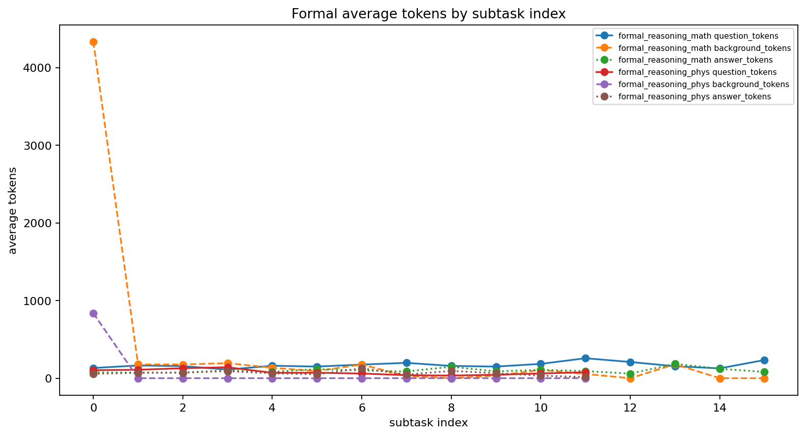
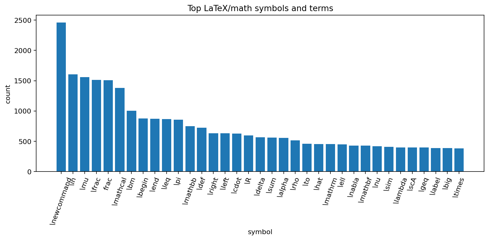
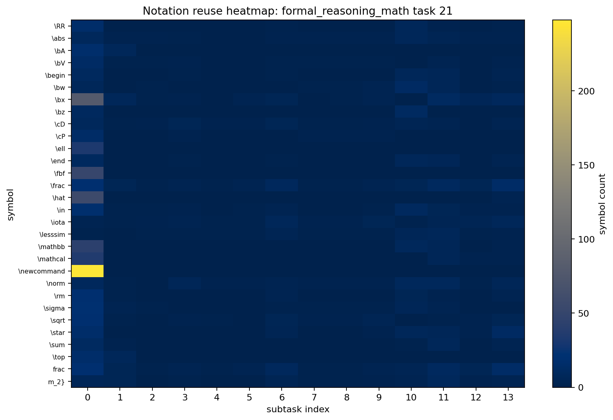
9. Memory unit analysis
| Subset | Memory type | Count |
|---|---|---|
group_travel_planner | preference_constraint_memory | 12.583 |
group_travel_planner | relational_memory | 7.550 |
group_travel_planner | entity_memory | 2.139 |
bundled_shopping | preference_constraint_memory | 5.252 |
bundled_shopping | attribute_memory | 4.720 |
bundled_shopping | entity_memory | 900 |
formal_reasoning_math | entity_memory | 7.029 |
formal_reasoning_math | intermediate_result_memory | 354 |
formal_reasoning_math | background_definition_memory | 112 |
progressive_search | preference_constraint_memory | 2.072 |
progressive_search | intermediate_result_memory | 1.641 |
formal_reasoning_phys | entity_memory | 1.210 |
formal_reasoning_phys | intermediate_result_memory | 86 |
formal_reasoning_phys | background_definition_memory | 20 |
Memory unit mix xác nhận rằng benchmark không nên được xử lý bằng một cơ chế memory duy nhất. Travel cần graph và relation tracking, shopping cần schema/key-value, formal cần symbolic context, còn progressive search cần stateful constraint accumulator.
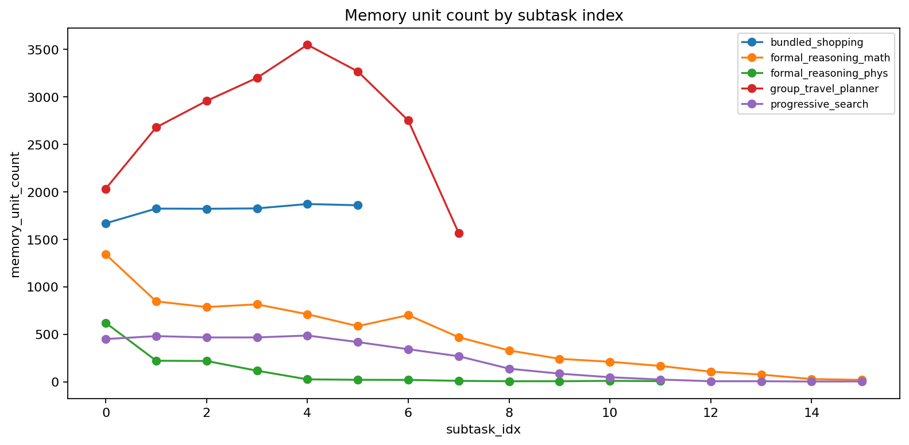
10. Hạn chế của EDA hiện tại
- Difficulty score chỉ là heuristic; chưa có model run hoặc metric chính thức để validate thứ hạng.
- Shopping category đang gần như unique theo task, nên chart category distribution chưa có nhiều ý nghĩa nếu chưa gom nhóm semantic.
- Progressive search chưa canonicalize final entity/candidate answer, làm cho thống kê unique answer bị thô.
- Formal symbol extraction chưa lọc macro/preamble LaTeX, khiến top symbol raw bị nhiễu.
- Travel graph aggregate có thể merge nhầm tên người phổ biến giữa các task nếu không namespace node bằng
task_id.
11. Đề xuất bước tiếp theo
- Cải thiện notebook bằng bộ lọc LaTeX boilerplate và bảng notation reuse sạch hơn.
- Thêm canonical entity extraction cho progressive search, tách “candidate answer” khỏi explanation dài.
- Chuẩn hóa travel graph theo
task_id:person_namevà thêm graph metrics như degree, connected components, reference depth. - Gom nhóm shopping category và attribute bằng normalization nhẹ, ví dụ lowercase, stemming thủ công hoặc embedding cluster.
- So sánh proxy difficulty với kết quả agent thật để calibrate trọng số difficulty.
12. File nguồn và khả năng commit
Report này được thiết kế để commit được: chỉ chứa HTML/CSS và bảng tóm tắt nhỏ, không nhúng figure PNG/HTML lớn
hoặc CSV đầy đủ. Các artifact sinh từ Kaggle được giữ local tại artifacts/ và đã được ignore trong Git.
- Notebook nguồn:
notebooks/EDA/kaggle_memoryarena_eda.ipynb - Helper code:
src/memoryarena_eda_utils.py - Artifact local:
artifacts/memoryarena_eda/kaggle_run_2026-06-01/ - Bảng summary local:
artifacts/memoryarena_eda/kaggle_run_2026-06-01/memoryarena_eda_outputs/tables/
Báo cáo được viết từ kết quả Kaggle EDA đã tải về local. Các con số token phụ thuộc tokenizer của notebook tại thời điểm chạy và có thể thay đổi nhẹ nếu đổi tokenizer hoặc logic heuristic.